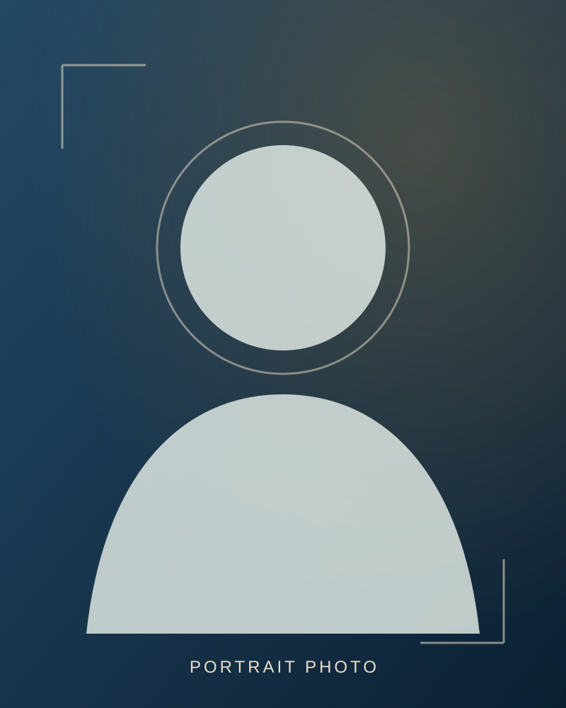

الإدارة الاستراتيجية
تخطيط استراتيجي، ومراجعة مؤسسية، وحوكمة، وأطر أداء، وخرائط تنفيذ تربط الأولويات بالمسؤولية والعمل.
- التخطيط الاستراتيجي
- مؤشرات الأداء
- الحوكمة
الاستراتيجية · الابتكار · التطوير المؤسسي
يقدّم الدكتور راني شهوان خدمات استشارية مستقلة للجامعات والمؤسسات الأهلية والجهات التنموية ومؤسسات دعم الأعمال والشركات الناشئة والمؤسسات العامة، بهدف بلورة الاتجاه، وتطوير الأنظمة، وتحقيق نتائج قابلة للاستمرار.

خبرات مختارة
الاستشارة الجيدة توضح الصورة، وتدعم القرار، وتترك المؤسسة أقدر على العمل بثقة.الدكتور راني شهوان
نبذة مهنية
يساند الدكتور شهوان القيادات والفرق في التعامل مع الأولويات الاستراتيجية والأكاديمية والتنظيمية وقضايا الابتكار. ويتمثل دوره في توضيح المسألة، ودعم اتخاذ قرارات مدروسة، وبناء مسار واقعي ينتقل بالمؤسسة من القرار إلى التنفيذ.
تُصمَّم كل مهمة بحسب احتياجات الجهة المستفيدة. ويجمع العمل بين التحليل المتأني، ومشاركة أصحاب المصلحة، والخبرة الأكاديمية، والأدوات العملية، مع مراعاة البيئة المحلية والموارد المتاحة والأشخاص المسؤولين عن التطبيق.
تعرّف أكثر إلى منهجية العملمجالات الاستشارة
يمكن تقديم الخدمات ضمن مشروع محدد، أو مهمة استشارية، أو عملية تيسير، أو برنامج مخصص لبناء القدرات.
تخطيط استراتيجي، ومراجعة مؤسسية، وحوكمة، وأطر أداء، وخرائط تنفيذ تربط الأولويات بالمسؤولية والعمل.
استراتيجيات وبرامج ومبادرات تعلم تعزز الممارسة الابتكارية والقدرات الريادية.
تصميم وتطوير خدمات دعم الأعمال والحاضنات والمراكز والمسرّعات والشراكات وآليات تنسيق المنظومة.
دعم البرامج الأكاديمية وملاءمة المناهج والجودة المؤسسية وتطوير أعضاء هيئة التدريس وتعزيز دور الجامعة في محيطها.
دعم منظم للجاهزية للاعتماد، وفهم المعايير، وتخطيط الأدلة، وبناء أنظمة فاعلة لضمان التعلّم.
استراتيجيات رقمية ومسؤولة تركز على التطبيقات المفيدة والجاهزية المؤسسية والحوكمة والتبنّي.
ورش عمل وتيسير وتطوير قيادي وتعلّم تطبيقي مصمم لتعزيز الثقة والقدرات الداخلية.
آلية العمل
يُتفق على نطاق المهمة مع الجهة المستفيدة، وتُكيَّف المنهجية بحسب طبيعة التكليف بدلاً من فرض نموذج جاهز.
فهم التكليف والسياق وأصحاب المصلحة والأدلة والقيود العملية.
تحديد جوهر المسألة واستكشاف الفرص والاتفاق على معنى النجاح.
إعداد استراتيجية أو إطار أو برنامج أو خارطة طريق تناسب الجهة المستفيدة.
مساعدة الفرق في تطبيق المخرجات وتعزيز القدرات ومراجعة التقدم عند الحاجة.
ابدأ بحوار
يساعد الحوار الأول في توضيح الاحتياج والنطاق المحتمل ومدى ملاءمة التعاون.